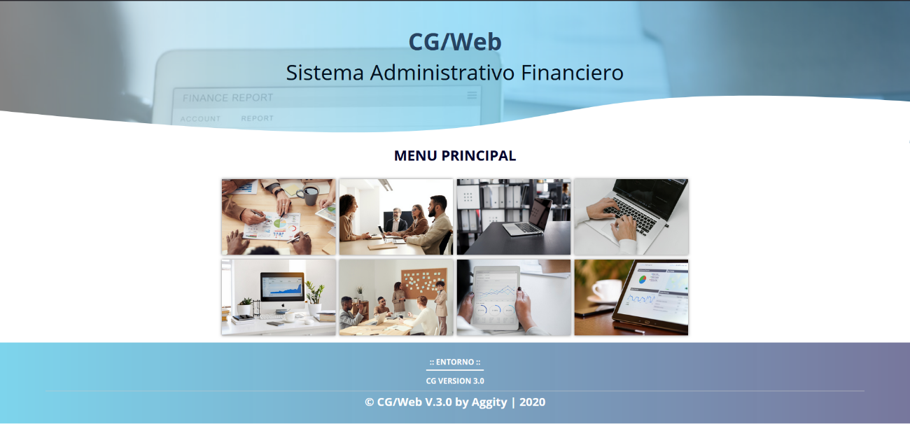
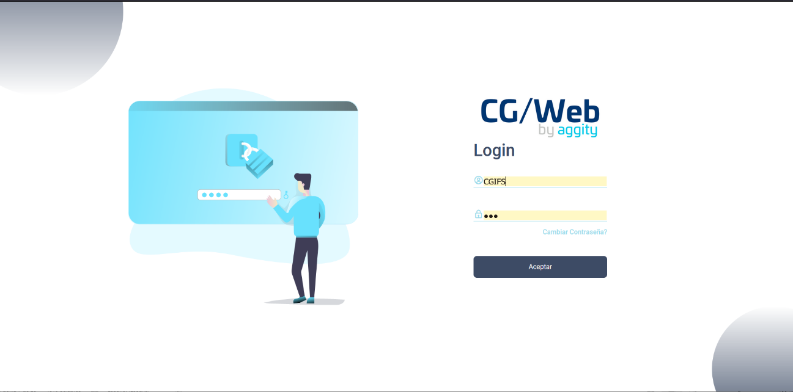
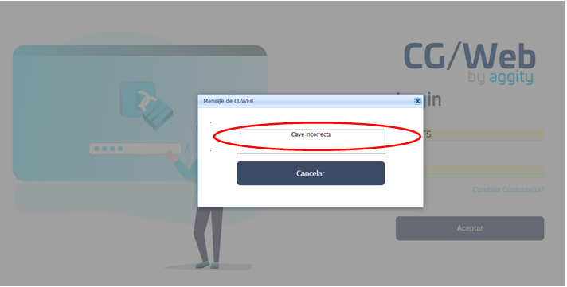
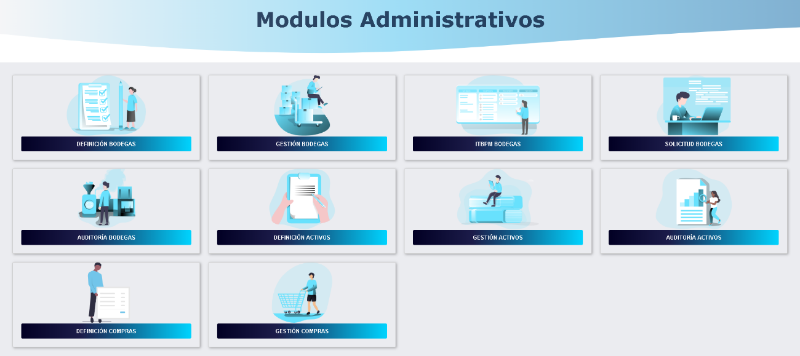

Ingreso al Aplicativo
El acceso de los Usuarios a CG/Web puede efectuarse de distintas formas, dependiendo de cómo se haya definido el entorno de trabajo. Es posible que el Usuario acceda directamente a un módulo en particular ó que deba seleccionarlo de un menú asignado por el responsable de la instalación.
Estos aspectos se tratan en los manuales: Instalación y Configuración del Sistema y Seguridades que constituyen los manuales de referencia técnica de CG/Web. Aquí se explican únicamente las acciones a efectuar por los usuarios una vez que han solicitado la conexión a CG/Web, inmediatamente antes de acceder al Menú Principal del sistema.
El acceso de los usuarios a CG/Web, es por vía web y está determinado por una dirección particular que la proporcionará el administrador de cada instalación, por ejemplo al digitar http://192.168.0.253/CGwebinicio se desplegará la pantalla que muestra 2.1.

Figura 1. Pantalla de inicio del Sistema.
En 2.1, podemos seleccionar cualquiera de las tres imágenes ó también llamados subsistemas de CG/Web, debido a que cada una de ellas dispone de módulos con sus respectivos menús y opciones. Por ejemplo, si hacemos un clic sobre la imagen: Control Financiero se desplegará la pantalla para el ingreso del usuario, misma que está representada en 2.2.

Figura 2. Pantalla de acceso al Sistema.
Usuario:
Ingrese el nombre del usuario.
Contraseña:
Ingrese la contraseña del usuario. Al ingresar incorrectamente, se presenta el mensaje de error mostrado en 2.3 y tendrá que volver a digitar la información.

Figura 3. Mensaje de error – Contraseña mal ingresada.
El formato de Validación de Usuario y Contraseña, aparece luego de haber realizado el ingreso por alguna de las vías descritas anteriormente. Su finalidad es aportar el código de usuario que va a operar con CG/Web. En la parte central aparece el logotipo del Grupo Business T&G.
Al ingresar correctamente el usuario y la contraseña presione el botón ACEPTAR o la tecla ENTER, hecho esto se desplegarán los diferentes módulos a los cuales puede tener acceso, este acceso ha sido otorgado por el administrador del sistema. Los módulos del subsistema: Control Administrativo se pueden observar en 2.4.

Figura 4. Acceso a los Módulos.
Cada uno de estos módulos son explicados en un manual diferente.
Created with the Personal Edition of HelpNDoc: Free Web Help generator